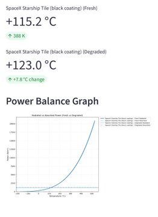

GitHub Repository
Streamlit App

Python-based simulator exploring radiative cooling technologies inspired by SpaceX's reusable heat shielding. Focuses on modeling thermal protection systems (TPS) for high-heat environments, with potential applications in orbital data centers for passive heat dissipation in vacuum conditions. Uses NumPy/SciPy for net cooling power calculations, spectral emissivity modeling, and material comparisons.
